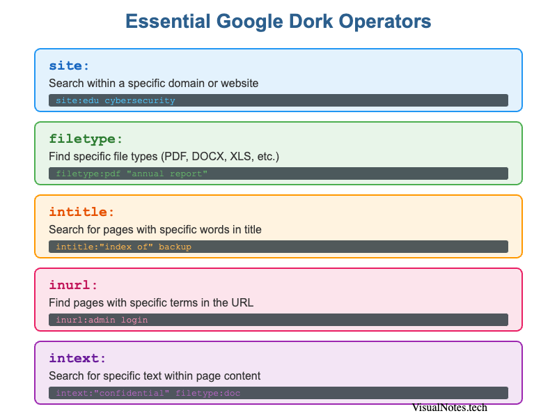
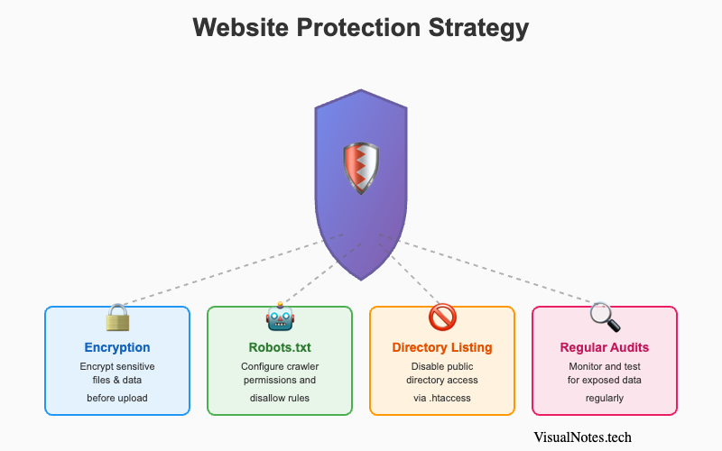
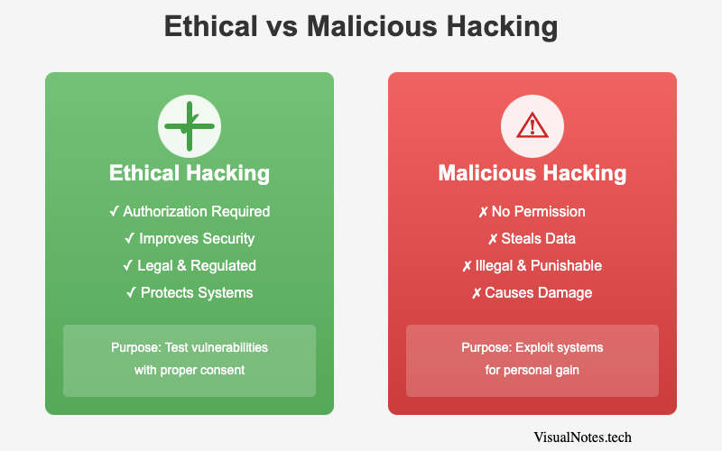
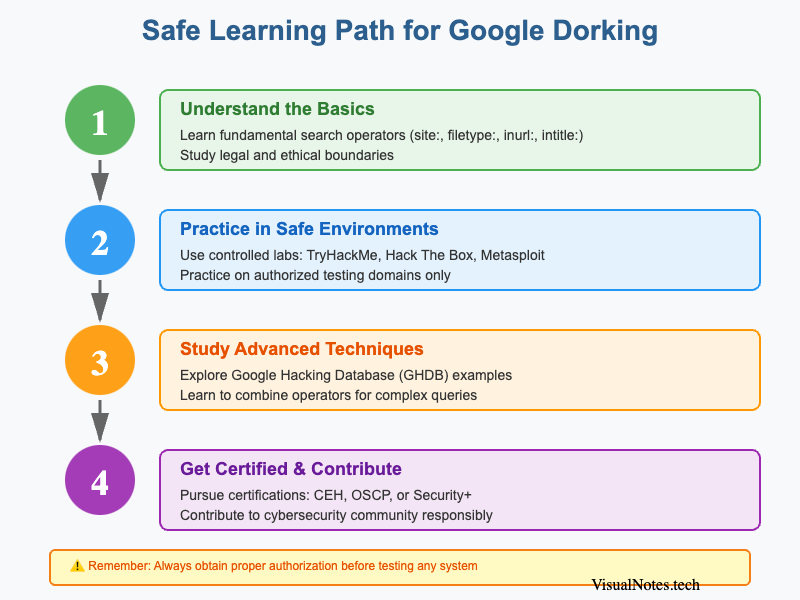

Google Dorking: The Complete Guide to Advanced Search Techniques (2026)

Google Dorking: Unlocking the power of advanced search operators
Google Dorking is more than just a clever search trick—it's a powerful reconnaissance technique used by cybersecurity professionals, researchers, and ethical hackers to uncover information that's publicly accessible but often overlooked.
In this comprehensive guide, you'll learn everything about Google Dorking: from basic operators to advanced techniques, legal implications, and how to protect your own website from dorking attacks.
What is Google Dorking?
Google Dorking (also known as Google Hacking) is the practice of using advanced search operators to find specific information indexed by Google. These operators allow you to filter search results with surgical precision, revealing data that standard searches would never uncover.
While the technique itself is completely legal, it becomes problematic when used to access or exploit sensitive information without authorization.
Essential Google Dork Operators

The fundamental operators every dorker should know
Here are the core operators that form the foundation of Google Dorking:
site:- Search within a specific domain or websitefiletype:- Find specific file types (PDF, DOCX, XLS, etc.)intitle:- Search for pages with specific words in the titleinurl:- Find pages with specific terms in the URLintext:- Search for specific text within page contentcache:- View Google's cached version of a pagerelated:- Find websites similar to a specified URL
Combining Operators for Power
The real power of Google Dorking comes from combining multiple operators. For example:
site:edu filetype:pdf cybersecurityThis query finds all publicly accessible PDF files related to cybersecurity from educational institutions.
Risks and Legal Implications
While Google Dorking itself is a legitimate search method, it can easily cross ethical or legal lines when used irresponsibly. Understanding these boundaries is crucial for anyone practicing or teaching the technique.
Why Google Dorking Can Be Risky
Google Dorking can unintentionally expose sensitive data such as:
- Password files and login credentials
- Database backups and configuration files
- Admin panels or control dashboards
- Private images, videos, or internal reports
Even though this information is technically publicly accessible, using it without authorization can constitute a breach of privacy or even a cybercrime under certain jurisdictions.
Moreover, automated dorking (via scripts or bots) can trigger Google's anti-bot protection or be flagged as reconnaissance by cybersecurity systems.
Legal Boundaries and Responsible Use
In countries such as the United States, United Kingdom, India, and the EU, laws like the Computer Fraud and Abuse Act (CFAA) or GDPR clearly define the difference between accessing public data and unauthorized intrusion.
⚠️ Ethical Guidelines
Ethical dorkers must follow these guidelines:
- Never exploit or use data found through dorking for malicious gain.
- Always obtain written consent before performing security audits on a target system.
- Avoid indexing or distributing sensitive data discovered during testing.
- Use sandbox environments to practice queries safely.
Following these best practices ensures compliance with ethical hacking frameworks and avoids legal consequences.
Protecting Yourself Against Google Dorking

Four-pillar strategy to protect your website from dorking attacks
If you own a website, you might unknowingly expose private files or directories to Google's index. Here's how to protect your data from Google Dorking attacks.
Securing Sensitive Data
- Encrypt confidential files before uploading them to servers.
- Disable directory listings on your web server (e.g., via
.htaccess). - Restrict indexing for folders that contain private or configuration files.
- Use HTTPS and authentication systems for all admin interfaces.
Implementing Robots.txt and Metadata Security
The robots.txt file is your first line of defense against unwanted indexing. Example:
User-agent: *
Disallow: /admin/
Disallow: /private/While this doesn't guarantee privacy (since it's public), it signals to legitimate search engines not to index those pages. Combine this with meta noindex tags in sensitive HTML files for stronger protection.
Regular Security Audits and Monitoring
Performing monthly Google searches for your own domain using dorks like:
site:yourdomain.com filetype:pdfcan reveal accidentally exposed documents. Additionally, using Google Search Console or security scanners (like Qualys or Nessus) helps you identify and fix vulnerabilities before they are indexed.
Powerful Google Dorking Examples (Safe to Try)
Let's look at a few completely legal and ethical examples of Google Dorking you can practice for research and learning purposes.
Finding Public PDFs and Educational Files
filetype:pdf site:.edu cybersecurityThis query finds publicly accessible PDF files related to cybersecurity from educational institutions.
Discovering Publicly Indexed Login Pages (Awareness Only)
intitle:"login" inurl:admin site:.orgThis helps security researchers understand how login pages are indexed. Never attempt to log in — use this knowledge for awareness and security improvement.
Searching for Open Directories and File Types
intitle:"index of" "parent directory" filetype:mp3A popular way to locate publicly available media or files. Again, the focus is on learning how Google indexes content — not downloading or exploiting any data.
These examples show how Google Dorking can be a valuable educational tool when used responsibly.
Tools That Complement Google Dorking
Google Dorking alone is powerful, but combining it with specialized tools can expand its potential for research and cybersecurity.
Exploit-DB, Shodan, and Censys
- Exploit-DB hosts thousands of security exploits and includes the Google Hacking Database (GHDB) — a repository of curated dorks categorized by vulnerability type.
- Shodan allows you to find internet-connected devices (IoT, webcams, routers) indexed by metadata rather than web pages.
- Censys performs deep scans of the internet to uncover certificates, IP addresses, and open ports.
Together, these tools form a complete reconnaissance toolkit for ethical hackers and cybersecurity professionals.
Google Hacking Database (GHDB)
Maintained by the Exploit-DB community, GHDB is a centralized collection of tested and verified Google dorks. Each entry is categorized by purpose — e.g., "Sensitive Directories," "Files Containing Passwords," or "Error Messages."
Visit https://www.exploit-db.com/google-hacking-database to explore thousands of safe examples and contribute new ones to the community.
Ethical Hacking vs. Malicious Hacking

Understanding the critical difference between ethical and malicious hacking
It's important to draw a clear line between ethical and malicious hacking:
| Aspect | Ethical Hacking | Malicious Hacking |
|---|---|---|
| Purpose | Improve security, test vulnerabilities | Steal or exploit data |
| Authorization | Requires consent and approval | Performed without permission |
| Outcome | Enhances safety | Causes damage or loss |
| Legality | Legal and regulated | Illegal and punishable |
By following the Code of Ethics defined by organizations like EC-Council or (ISC)², professionals ensure their work contributes positively to the cybersecurity ecosystem.
How to Learn Google Dorking Safely

A structured approach to learning Google Dorking ethically and safely
If you're inspired to explore Google Dorking, there are several legitimate ways to learn the skill.
Online Courses and Certifications
Enroll in ethical hacking and cybersecurity programs from reputable platforms like:
- Coursera (Cybersecurity Fundamentals by IBM)
- Udemy (Ethical Hacking with Google Dorking)
- EC-Council's CEH Certification (Certified Ethical Hacker)
These programs teach not only the mechanics of dorking but also cyber law, digital forensics, and responsible disclosure.
Practice Labs and Sandbox Environments
To avoid any legal issues, use controlled environments like:
- TryHackMe
- Hack The Box
- Metasploit Labs
These labs simulate real-world systems where you can safely practice advanced dorking and penetration testing without violating laws.
Future of Google Dorking
As artificial intelligence (AI) and machine learning (ML) reshape search technology, Google Dorking is also evolving.
Future versions of search engines may use contextual awareness and semantic indexing, allowing dorking-style queries to reveal even more refined data.
Ethical hackers and OSINT researchers are already developing AI-driven dork generators that automate query creation, categorize results, and detect exposed data more efficiently.
However, with great power comes great responsibility — the importance of digital ethics, privacy laws, and cybersecurity awareness will only grow.
FAQs About Google Dorking
1. Is Google Dorking illegal?
No, Google Dorking itself is not illegal. It becomes illegal only when used to access private or restricted data without permission.
2. Can I use Google Dorking for cybersecurity research?
Yes, cybersecurity experts use it to find vulnerabilities, leaks, and misconfigurations, provided they have authorization.
3. Does Google punish users for dorking?
Not usually. However, excessive or automated queries can lead to temporary IP blocks or captchas.
4. How can I protect my site from Google Dorking?
Use robots.txt, noindex meta tags, and regular security audits to keep sensitive data from being indexed.
5. What is the difference between OSINT and Google Dorking?
OSINT (Open-Source Intelligence) is the broader process of collecting public data, while Google Dorking is a specific technique used within OSINT.
6. What are the best resources to learn Google Dorking?
Start with Exploit-DB's GHDB, ethical hacking courses, and safe lab environments like TryHackMe.
Conclusion: Responsible Use of Search Intelligence
Google Dorking is more than a hacker's trick — it's a digital magnifying glass that helps us understand how information is indexed, stored, and exposed online. When used responsibly, it's an invaluable skill for cybersecurity experts, students, and journalists.
The key lies in ethics: never exploit what you find, and always respect privacy. As the internet expands and new technologies emerge, ethical search intelligence will play a central role in shaping a safer, more transparent digital world.
📚 External Resource
For a comprehensive list of tested dorks, visit the official Google Hacking Database (GHDB) at https://www.exploit-db.com/google-hacking-database.
Final Takeaway
- Google Dorking is powerful, legal when used ethically, and invaluable for research and cybersecurity.
- Protect yourself by securing your data and learning within ethical limits.
- Stay informed, practice safely, and remember — knowledge is power only when used responsibly.